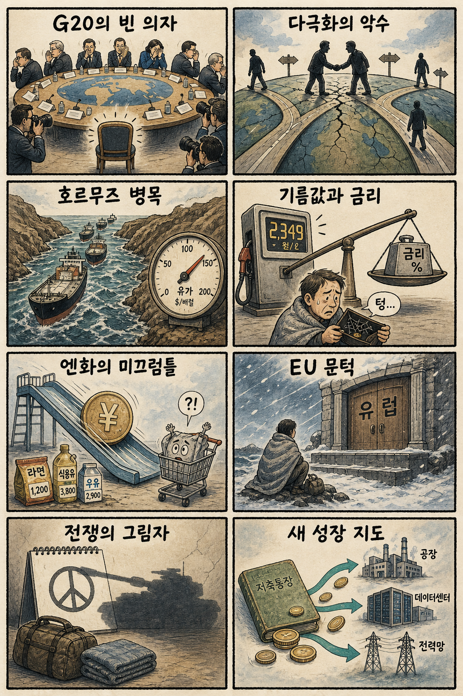
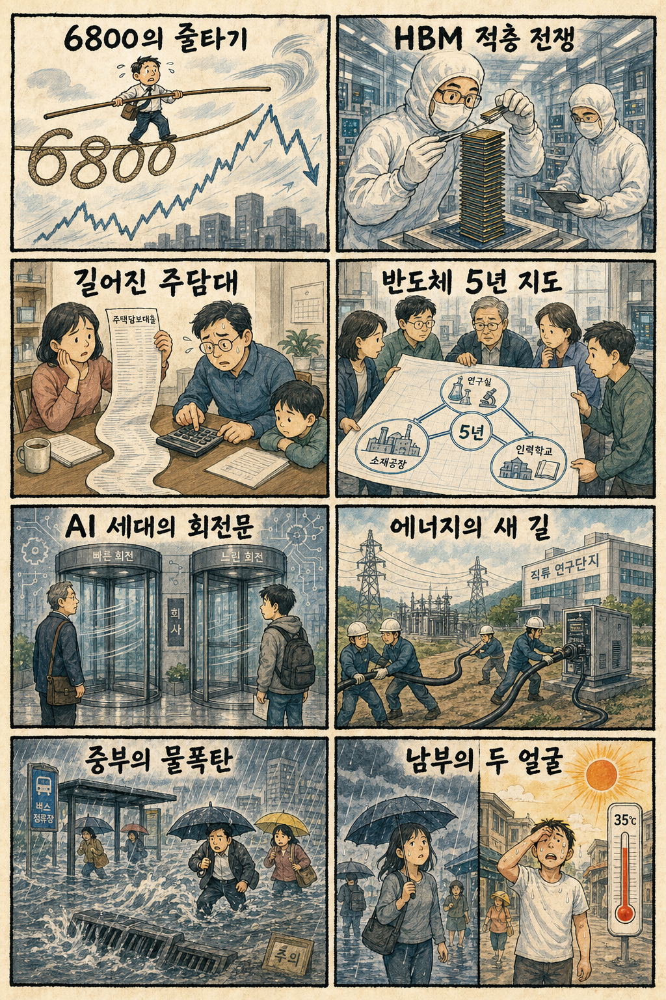

01
테슬라 · 347.15→367.95달러 · +5.99%
내용요약 시가 대비 5.99% 상승하며 대형 성장주 가운데 두드러진 강세를 보였습니다.
예상여파 국내 이차전지·전장주의 심리를 지지할 수 있지만 개별 촉매 확인 전 단순 추격 연결은 피해야 합니다.
MORNING_BRIEFING_20260901
작성 시각: 2026-09-01 06:43 KST · 직전 미국 정규장과 2026-09-01 KST 당일 공개 기사 기준
직전 미국 정규장인 8월 31일에는 미·이란 교전 재개와 국제유가 급등 부담으로 다우 -0.70%, S&P 500 -0.33%, 나스닥 -0.12%로 하락했습니다. 다만 엔비디아 +0.88%, AMD +0.97%, 마이크론 +2.96% 등 반도체주는 시가 대비 강세를 보여 국내 대형 반도체의 완충 요인입니다. 오늘 한국 증시는 유가·금리·원화 부담과 반도체 상대강도 사이의 줄다리기가 예상됩니다.
| 지수 | 종가 | 등락률 | 한국 증시 시사점 |
|---|---|---|---|
| 다우존스 | 53,185.90 | -0.70% | 유가·경기민감주 부담 |
| S&P 500 | 7,686.14 | -0.33% | 반도체 방어 여부 확인 |
| 나스닥 종합 | 26,370.89 | -0.12% | 반도체 방어 여부 확인 |
유가 급등과 금리 인상 우려가 경기민감주에 부담을 줬습니다.
마이크론 +2.96%, AMD +0.97%, 엔비디아 +0.88%로 버텼습니다.
6800선을 회복했지만 장중 변동성과 KOSDAQ 약세가 남았습니다.
30건 보정 표본과 수급·컨센서스 문턱을 검증한 후보가 없습니다.
8월 31일 보고서는 검증 문턱을 통과한 후보가 없어 공식 추천을 내지 않았습니다. 게시 당시 판단은 그대로 유지되며 사후 종목을 추가하지 않습니다.
| 시장 | 종가 | 등락률 | 해석 |
|---|---|---|---|
| KOSPI | 6,820.02 | +0.46% | 31일 시가 대비 +3.12% |
| KOSDAQ | 834.29 | -0.49% | 31일 시가 대비 +1.54% |
| 다우존스 | 53,185.90 | -0.70% | 유가 부담 |
| S&P 500 | 7,686.14 | -0.33% | 낙폭 제한 |
| 나스닥 종합 | 26,370.89 | -0.12% | 낙폭 제한 |
마이크론 +2.96%, AMD +0.97%, 엔비디아 +0.88%였습니다.
크라우드스트라이크가 시가 대비 +4.33%로 강했습니다.
아마존 -1.54%, 알파벳 -1.27%로 밀렸습니다.
마벨이 시가 대비 -2.07%로 하락했습니다.
내용요약 시가 대비 5.99% 상승하며 대형 성장주 가운데 두드러진 강세를 보였습니다.
예상여파 국내 이차전지·전장주의 심리를 지지할 수 있지만 개별 촉매 확인 전 단순 추격 연결은 피해야 합니다.
내용요약 사이버보안주 강세 속 시가 대비 4.33% 상승했습니다.
예상여파 AI 보안과 기업 소프트웨어의 상대강도가 국내 보안주의 단기 관심을 높일 수 있습니다.
내용요약 HBM·메모리 기대 속 시가 대비 2.96% 상승했습니다.
예상여파 국내 메모리 대형주에는 우호적 신호지만 유가와 원화 부담이 시초가 이후 수급을 좌우할 수 있습니다.
내용요약 중국 인터넷주 약세 속 시가 대비 2.27% 하락했습니다.
예상여파 중국 소비·플랫폼 관련 국내 종목의 투자심리에 부담을 줄 수 있습니다.
내용요약 AI 네트워크 반도체가 시가 대비 2.07% 하락했습니다.
예상여파 AI 반도체 내부에서도 메모리·GPU와 네트워크 칩의 차별화가 이어질 수 있습니다.
유가 급등과 다우 -0.70%는 운송·화학·소비주와 원화에 부담인 반면, 마이크론 +2.96%·엔비디아 +0.88%의 반도체 상대강도는 삼성전자·SK하이닉스에 완충 요인입니다. 직전 거래일 KOSPI는 시가 대비 +3.12%였고 KOSDAQ은 +1.54%였습니다. 개장 초 원화와 외국인 선물, 정유·항공의 반대 방향, 반도체 갭 유지 여부를 확인하기 전 추격매수를 피합니다.
오늘은 추천 없음 — 현금 관망
유가 급등과 지수 변동성 속에서 전일까지의 외국인·기관 수급, 컨센서스 변화, 30건 이상 유사 조건 확률 보정, 예상 손익비 1.5 이상을 동시에 검증한 종목이 없습니다. 종합점수와 상승확률을 임의로 만들지 않습니다.
관심 연결종목 메모리 반도체, 정유, 사이버보안은 뉴스 연결 관찰 대상일 뿐 매수 추천이 아닙니다. 개장 초 갭 상승 종목은 추격매수 금지입니다.
호르무즈 변수와 원화 약세가 외국인 선물에 미치는 영향을 봅니다.
마이크론 강세가 삼성전자·SK하이닉스 시초가 이후에도 이어지는지 확인합니다.
정유와 항공·화학·소비주의 반대 방향을 추격 없이 관찰합니다.
오전까지 중부 최대 100㎜ 이상 비와 교통·침수 위험을 우선 확인합니다.
핵심 요약: AI 반도체 수요는 엔비디아의 대규모 매출로 확인되는 가운데 경쟁은 모바일 칩 기업의 데이터센터 진입, HBM 적층, 금융 AI 투자로 넓어졌습니다. 전력 측면에서는 폐쇄 원전 재가동이 데이터센터 전력 해법으로 다시 부상합니다.
내용요약 엔비디아의 분기 매출이 962억달러에 이르며 AI 연산 수요의 성장 속도를 보여줬다는 당일 보도입니다.
예상여파 AI 투자 사이클의 규모는 반도체·서버·전력망 수요를 지지하지만 높은 기대치와 공급 병목이 변동성을 키울 수 있습니다.
내용요약 퀄컴과 Arm 등 모바일 칩 기업이 데이터센터용 CPU와 가속기 시장을 노리며 엔비디아·인텔 중심 경쟁 구도를 흔들고 있다는 분석입니다.
예상여파 AI 데이터센터의 칩 선택지가 넓어지면 가격·전력효율 경쟁이 심해지고 파운드리와 패키징 공급망에도 새 수요가 생길 수 있습니다.
내용요약 AI 기업 파일AI가 일본 금융그룹 SMBC와 싱텔의 투자를 유치해 일본 금융 AI 시장 확대에 나선다는 보도입니다.
예상여파 금융권의 생성형 AI 도입이 본격화될수록 보안·규제 대응과 실제 업무 생산성 입증이 확산 속도를 좌우할 전망입니다.
내용요약 HBM 경쟁의 초점이 미세공정만이 아니라 더 많은 단을 안정적으로 쌓는 적층·패키징 기술로 이동한다는 보도입니다.
예상여파 수율과 발열 관리가 공급량과 원가를 가르면서 후공정 장비·소재와 검사 기술의 중요성이 커질 수 있습니다.
내용요약 미국 팔리세이즈 원전이 재가동을 위한 핵연료 장전에 들어가 폐쇄 원전의 데이터센터 전력원 활용 가능성을 보여줬다는 보도입니다.
예상여파 AI 전력 수요가 원전 재가동과 장기 전력계약을 촉진할 수 있지만 안전 심사와 비용·일정 관리가 핵심 변수입니다.
핵심 요약: 미·이란 충돌과 호르무즈 운송 급감이 유가·금리의 핵심 위험으로 떠올랐습니다. G20의 러시아 초청을 둘러싼 미국·유럽의 균열, 중국·러시아 협력, 엔화 약세와 아이슬란드의 EU 대안 외교가 국제 질서의 분화를 보여줍니다.
내용요약 미국이 G20 회의에 러시아 재무장관을 초청하자 유럽 측이 공동 사진 촬영에 반발했다는 연합뉴스 보도입니다.
예상여파 러시아의 국제무대 복귀를 둘러싼 미국·유럽의 온도 차가 커지면 우크라이나 외교 공조와 제재 정책의 균열 위험이 높아질 수 있습니다.
내용요약 중국과 러시아 정상이 만나 세계 다극화와 경제·에너지 협력을 강조했다는 보도입니다.
예상여파 양국 협력이 강화되면 에너지 결제와 공급망의 블록화가 심화되고 서방과의 외교·무역 마찰이 길어질 수 있습니다.
내용요약 호르무즈 해협을 통한 원유 운송이 90%가량 줄어 장기 봉쇄 시 10월 이후 수급이 고비라는 보도입니다.
예상여파 원유 운송 차질은 유가와 운임, 물가 기대를 밀어 올려 글로벌 금리와 소비 심리에 동시 부담을 줄 수 있습니다.
내용요약 미국과의 정책 공조에도 엔화 약세가 이어지며 일본의 수입물가 부담이 커지고 있다는 보도입니다.
예상여파 엔저가 길어지면 아시아 통화와 수출 가격 경쟁에 영향을 주고 일본은행의 정책 대응 압력이 높아질 수 있습니다.
내용요약 아이슬란드가 EU 가입 협상 재개 불발 뒤 안보 강화를 위한 양자 협정 등 대안을 검토한다는 연합뉴스 보도입니다.
예상여파 북대서양 안보 협력은 강화될 수 있지만 EU 통합 경로가 늦어져 유럽 내부 정치 지형의 분화가 이어질 수 있습니다.

핵심 요약: KOSPI가 6800선을 회복했지만 변동성은 여전합니다. HBM 적층 경쟁과 정부의 반도체 5년 청사진이 산업의 중장기 방향을 제시하는 한편 장기 고정 주담대와 AI 시대의 청년 고용 문제가 가계·노동시장의 과제로 부상했습니다.
내용요약 KOSPI가 6800선을 회복했지만 큰 장중 변동성이 남아 박스권 흐름을 주시해야 한다는 당일 분석입니다.
예상여파 대형주 반등에도 지수 내부 차별화가 커질 수 있어 외국인 수급과 원화, 추격매수 위험을 함께 점검해야 합니다.
내용요약 HBM 경쟁이 적층·패키징 기술 중심으로 진화하면서 국내 메모리와 후공정 생태계의 기술 경쟁을 다룬 보도입니다.
예상여파 고단 적층의 수율과 발열 문제가 공급 우위를 가르며 장비·소재·검사기업의 실적 차별화가 커질 수 있습니다.
내용요약 10년 이상 장기·고정형 주택담보대출을 다시 확대하는 방안이 추진된다는 뉴스1 보도입니다.
예상여파 금리 변동 위험을 줄이는 효과가 있지만 초기 금리와 상환 기간, 총부채원리금상환비율 조건이 실수요 부담을 좌우합니다.
내용요약 정부가 연구개발·소부장·인력을 아우르는 첫 법정 반도체산업 경쟁력 강화 기본계획 수립에 착수했다는 보도입니다.
예상여파 중장기 정책 예측성은 높아질 수 있으나 예산·인허가·인력 공급을 실제 일정으로 연결하는 실행력이 관건입니다.
내용요약 AI가 중장년 일자리를 보완하는 반면 청년의 초급 직무 진입을 줄일 수 있다는 고용시장 분석입니다.
예상여파 청년의 첫 경력 형성 기회가 약해질 수 있어 재교육과 직무 전환, 기업의 주니어 채용 구조 개선이 중요해집니다.
